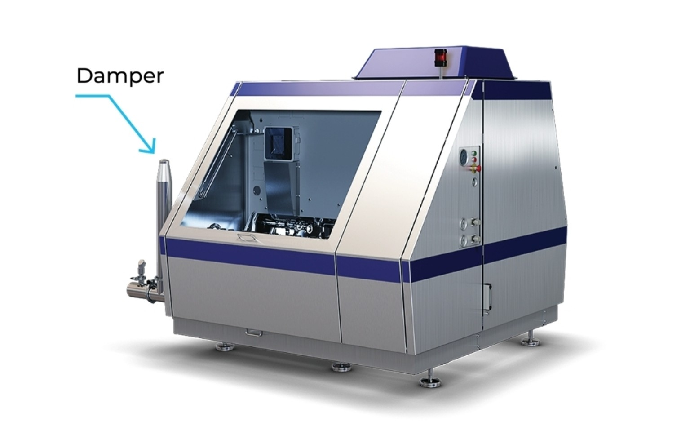
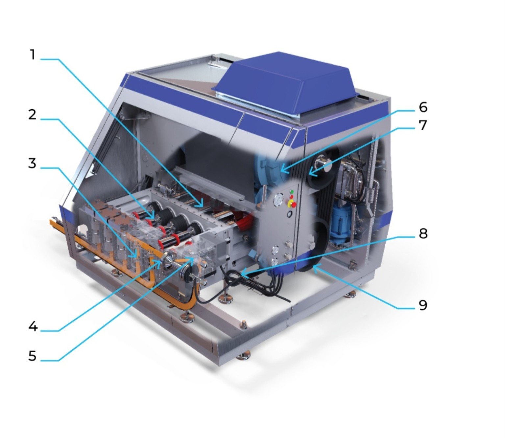
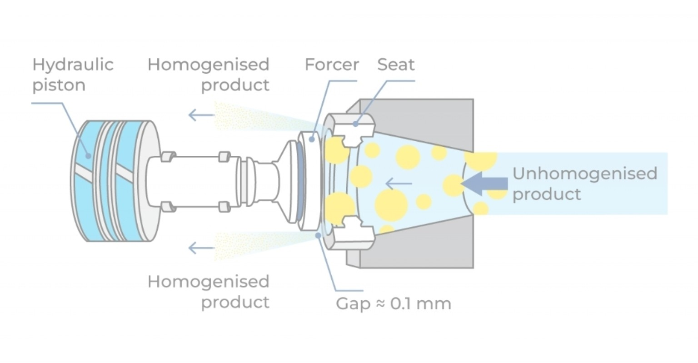
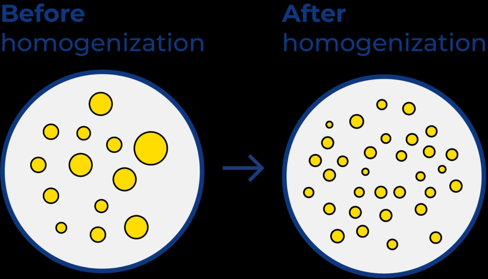

Internal machine view
The numbered view connects the mechanical drive, pressure-generation block and homogenizing assemblies.
A high-pressure positive-displacement pump and precision homogenizing system used to reduce milk-fat globule size, limit creaming and produce a more stable dairy emulsion.
Pressure is generated by the pistons; homogenization occurs at the precision valve. The damper supports stable flow but does not perform the homogenizing action.

The machine takes mechanical power, converts it into high product pressure, and then releases that pressure through a precisely controlled narrow valve gap.
Milk contains relatively large fat globules dispersed in the aqueous phase. Because the globules are comparatively large, they have a stronger tendency to move upward and form a cream layer.
The fat globules are broken into a much finer dispersion. The newly created interfacial surface is covered by components from the milk plasma, helping the smaller globules remain dispersed.
The external machine can be understood as three connected systems: drive, pressure generation, and flow conditioning/homogenization.
Each component has a different job in converting motor power into a controlled homogenizing effect.

The numbered view connects the mechanical drive, pressure-generation block and homogenizing assemblies.
Contains the crank mechanism that converts rotary drive into reciprocating motion for the pistons.
Reciprocate inside the pump block and perform the suction and compression strokes that move and pressurize the product.
Houses the high-pressure pumping chambers, piston passages and associated product valves.
Receives the major pressure drop and performs the principal fat-globule disruption.
Provides controlled back-pressure and helps reduce clusters formed after the first stage.
Supplies the rotary mechanical power required by the piston pump.
Transfers motor power to the drive train and allows the required speed/torque relationship.
Controls the hydraulic force applied to the homogenizing device and therefore the operating pressure at the valve.
Transmits and adapts mechanical drive between the belt system and crank/piston mechanism.
This is the operating sequence to remember when studying the equipment.
Product enters the high-pressure pump through the inlet and fills the pumping chamber during the suction stroke.
The crank mechanism drives the piston forward. The chamber volume decreases and product pressure rises.
Pressurized product reaches the homogenizing device. The forcer and seat create a very narrow controlled passage.
The pressure drop across the restriction produces a sharp increase in liquid velocity through the gap.
Intense flow conditions deform and break the fat globules, producing a much finer dispersion.
Where a second stage is used, controlled back-pressure acts on the first-stage outlet and helps reduce clusters.
Forward stroke: the piston moves toward the pump chamber, compressing the milk and increasing its pressure.
Valve opens: once the pressure conditions permit flow, product is forced toward and through the homogenizing device.
Return stroke: the piston moves back, the pumping chamber is refilled, and the next pressure cycle begins.
The piston generates pressure. The homogenizing valve creates the controlled pressure drop and high-velocity flow responsible for homogenization.
The valve is the actual homogenizing zone; it is not simply a pressure-control fitting.

The hydraulic piston applies force to the forcer. The forcer and seat form the controlled passage through which the pressurized product flows.
The gap shown is approximately 0.1 mm. Because the available passage is extremely small, the product accelerates to very high velocity as it passes through the restriction.
The pressure energy supplied by the pump is therefore transformed into the intense flow conditions required for fat-globule disruption.
The damper is a supporting hydraulic component. It should not be confused with the homogenizing valve.
The pump uses reciprocating pistons. Unlike a perfectly continuous rotary flow source, piston movement naturally creates pressure and flow fluctuations as the pistons move through their cycles.
These fluctuations can propagate into the product line if they are not controlled.
The damper absorbs part of the pressure fluctuations generated by the reciprocating pump and helps provide a steadier downstream flow and pressure profile.
It smooths the hydraulic behaviour; it does not break the fat globules.
Damper = flow/pressure pulsation control. Homogenizing valve = controlled restriction where homogenization occurs.
The high-pressure jet creates extreme local flow conditions inside the homogenizing zone.

The visual is used once here to show the basic physical result: fewer large globules and a much finer dispersion.
The original large fat globules are converted into a much finer population. The increased interfacial area is then covered by milk-plasma components, supporting emulsion stability.
The first stage receives the major pressure drop and performs the principal fat-globule size reduction.
Typical first-stage pressure: 150–200 bar for the operating example shown in the supplied learning material.
The second stage works at a much lower pressure. It provides controlled back-pressure and helps break up clusters formed immediately after the first stage.
Typical second-stage pressure: 30–50 bar in the supplied learning example.
| Parameter | Typical / supplied range | Why it matters |
|---|---|---|
| Inlet temperature | 60–65°C for the supplied operating example | Lower viscosity supports the required flow behaviour and is common when homogenization is integrated with pasteurization. |
| Homogenization pressure | 100–250 bar depending on product and process | Controls the intensity of the homogenizing action. |
| First-stage pressure | 150–200 bar in the supplied example | Main pressure drop and primary globule disruption. |
| Second-stage pressure | 30–50 bar in the supplied example | Back-pressure and reduction of clusters. |
| Valve gap | ≈0.1 mm | Creates the very small flow passage needed for rapid acceleration. |
| Gap velocity | ≈100–400 m/s | Produces the intense flow conditions in the homogenizing zone. |
As the pressurized liquid passes through the homogenizing restriction, pressure energy is converted into kinetic energy. Part of the energy is subsequently recovered as pressure and part appears as heat.
This is why the temperature around a homogenizer must be considered when designing the heating and regeneration sequence of a dairy process line.
Monitor first- and second-stage pressure and watch for abnormal fluctuations.
Wear can alter the effective gap and therefore change the resulting particle-size distribution.
The damper should support a stable downstream pressure/flow pattern from the reciprocating pump.
The motor and transmission provide mechanical power. The crankcase and pistons convert that power into reciprocating pumping action. The pump block raises product pressure. The hydraulic pressure system controls the homogenizing device. The first stage performs the principal globule disruption, while the second stage provides controlled back-pressure and de-clustering. The damper smooths pressure pulsations produced by the reciprocating pump.
In short: the pump creates the pressure, the valve creates the homogenizing effect, and the damper stabilizes the flow.